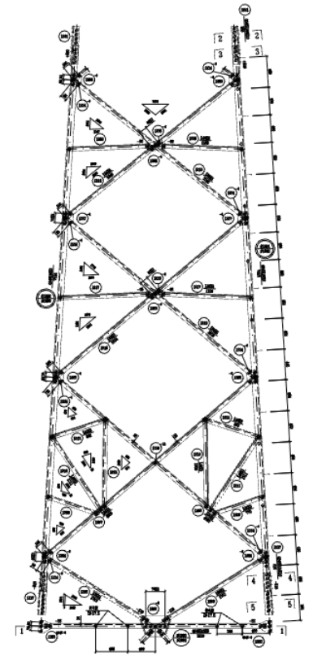

开源 AI Agent Skill · 领域包构建器
RebuildEverythingin 3D,Precisely.
NeuBE-Structural-Rebuild 把图纸、照片、点云、表格和工程记录，组织成可追溯、可验证、可人工接管的结构重构流程。
共创三步
带来图纸→共定规则→共建领域
NEUBE-STRUCTURAL-REBUILD · 2026
缺失的那一层
AI 可以生成一个漂亮的模型，
却不一定交付一个可信的结构。
输入图纸 · 图片 · 点云 · 表格
碎片化、跨版本、跨来源。每一条线都可能有多个解释。
缺失的一层证据 · 身份 · 约束 · 状态
没有这层，三维结果只能被观看，不能被审计、修正和安全地交接。
输出可追溯的结构模型
每个对象都能回答：从哪里来？经过什么判断？现在是否仍有效？
NeuBE 的产品不是一个单体生成器。 它是一套可以教给 AI Agent 的工程工作方法、领域接口和发布门禁。
02 · 缺失的那一层
重构方法
把重构变成一条可检查的编译链
AI 不猜成品。它在每个阶段提出带边界的候选；确定性程序检查可计算事实；工程师只处理无法由证据消解的责任问题。
未决依赖会阻塞下游。上游事实改变时，相关结果会变成 stale，而不是继续伪装成 current。
03 · 来源 → 观察 → 假设 → 语义 → 约束 → 复核 → 输出
完全开源
Fork 的不是一段 Prompt，
而是一套可运行的结构 Skill 基座。
Apache-2.0 · 公开 IR · 独立验证器 · 支持领域包
工作方法
规定如何读证据、管理歧义、调用工具、请求复核，并在什么条件下停止。
agent behavior contract通用契约
来源、观察、假设、语义结构、约束、输出和依赖状态。
public-ir.schema.json可执行门禁
不依赖黑盒服务，验证许可、引用、稳定 ID、残差与发布状态。
validate_public_ir.py专业积木
把构件本体、连接规则、容差、求解器和验收标准装进一个可 Fork 的领域包。
domains/<domain>Rebuild the structure.Rebuild the reasoning behind it.查看 GitHub 仓库 →
04 · 开源基础
成功样例 · 角钢输电塔
角钢塔，是 NeuBE SR 的第一个高难度压力测试

正在加载三维模型…
不是“线条变成实体”。 是多视图证据、构件身份、连接拓扑、局部坐标系和约束求解共同形成的结构模型。
05 · 角钢塔是样例，不是产品边界
停止边界
最可靠的 Agent，知道什么时候不能继续
NeuBE 不把置信度当成工程授权。未决身份、坐标或约束问题会进入复核队列，并阻塞依赖它的下游制品。
review_required候选解释仍有多个可能，系统列出证据、影响和需要回答的问题。
blocked关键依赖未解决时，几何、连接或发布输出不能被伪装成 current。
stale上游事实改变后，依赖制品自动失效，等待重新验证而不是静默沿用。
06 · 置信度不是工程授权
可追溯身份浏览器
同一个构件，跨越五种状态仍然保持身份
先看五个身份层，再点击展开其中一个，查看证据、判断和发布状态。
来源 / 原始观察
原始输入不被解释覆盖
保存图纸版本、页码、局部区域和原始字符串。当前状态只说“看到了什么”，不急于说“它是什么”。
07 · 证据 → 假设 → 语义 → 验证 → 发布
开放共创 · OPEN TO COLLABORATION
把你的图纸和专业判断带来，
一起教会 AI 你的领域。
建筑、桥梁、桁架、设备支撑、工业管线，任何需要从图纸理解实体的行业，都可以从 NeuBE SR 开始。你提供图纸、术语和判断规则，我们一起把它变成可复用、可验证的领域包。
01 带来图纸02 共定义规则03 共建领域包
NEUBE SHOWCASE
浙江每日互动研究院有限公司
浙江每日互动研究院有限公司 · 浙江每日仝泰科技有限公司（筹）
ATTRIBUTES浙江每日互动研究院有限公司
CREDITS浙江每日互动研究院有限公司
08 · 重构结构 · 重构推理